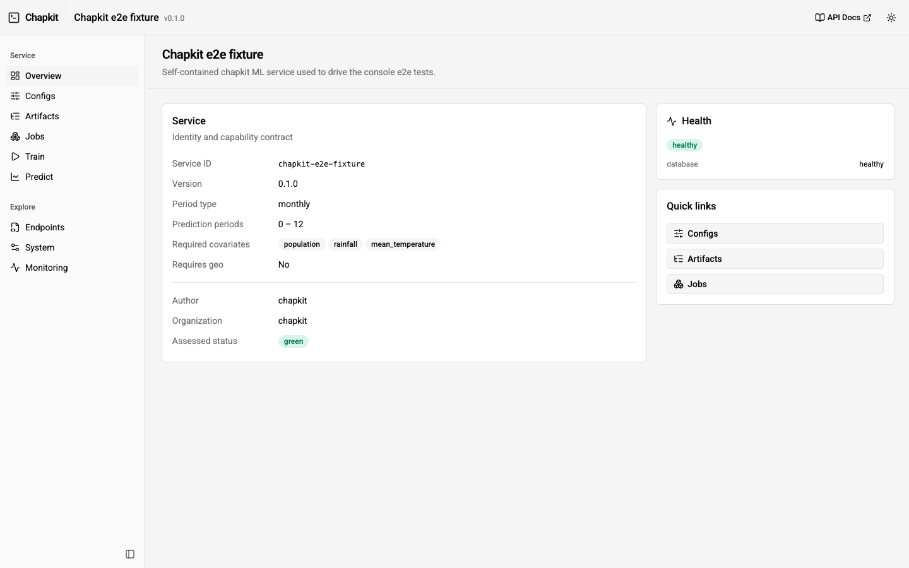
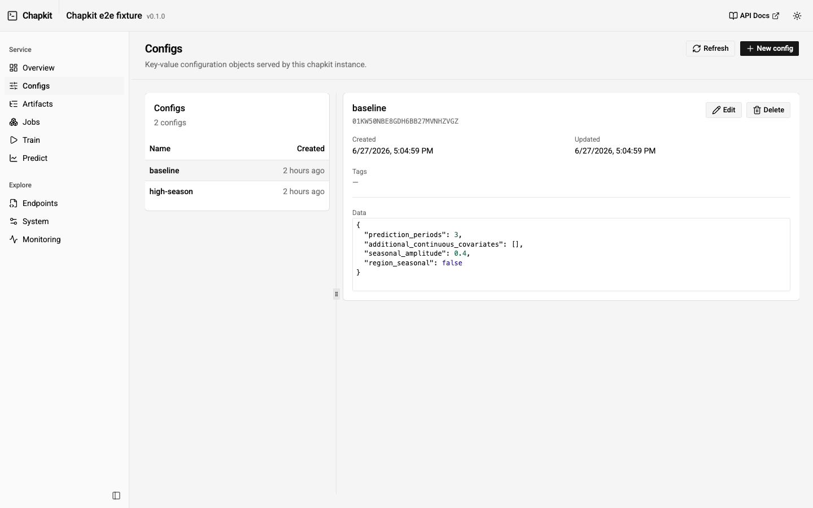
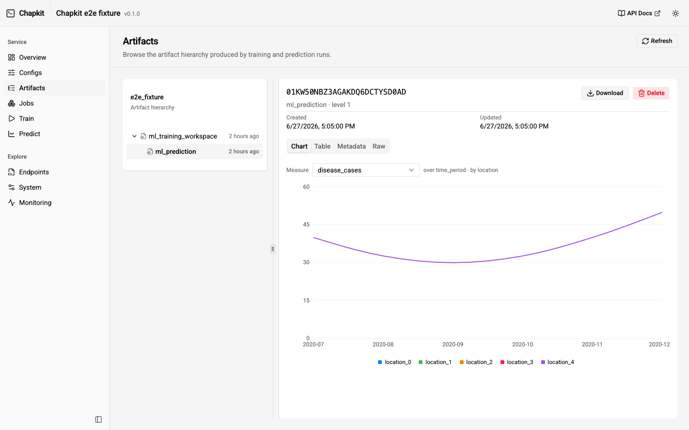
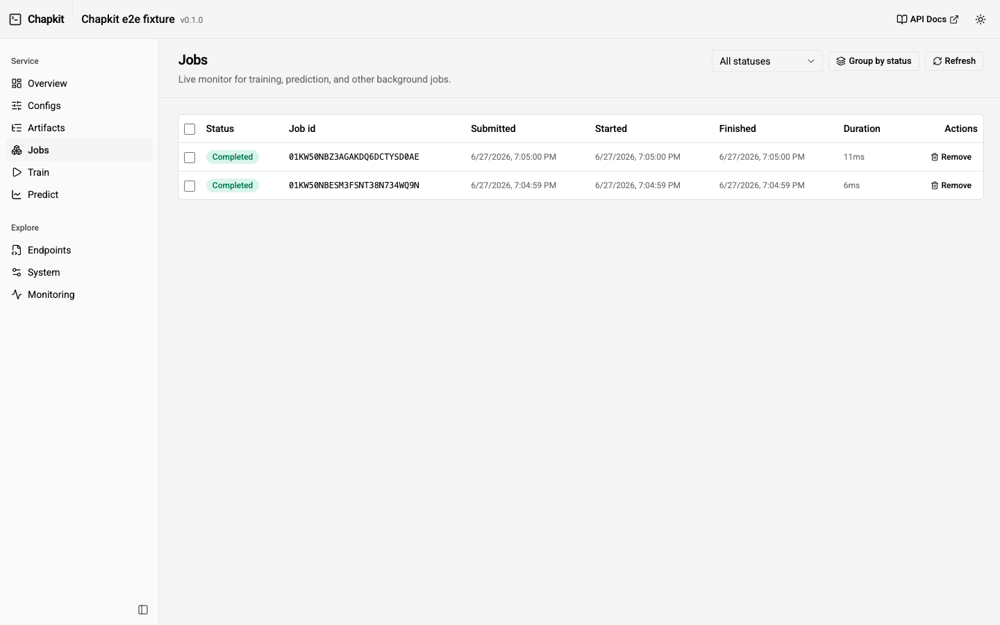
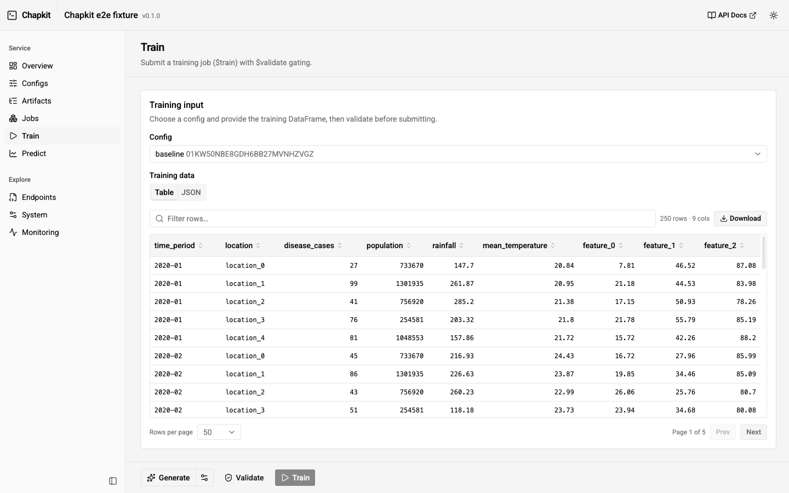

Web Console¶
Every chapkit service ships a built-in web console: a single-page app served at
the service root (/) that lets you explore and operate a running service from a
browser. It talks directly to the service's own /api/v1 endpoints, so it works
standalone with no DHIS2 or other host application in the loop. This makes it a
fast way to inspect a session after, say, a chapkit test run.
Opening the console¶
Start any chapkit service and open its root URL:
Then visit http://localhost:8000/ (or the port your service uses). The console
replaces the previous static landing page; the underlying Swagger UI is still
available at /docs and is linked from the console
header and sidebar.

The console follows your operating system's light/dark preference automatically, and you can override it with the toggle in the top bar.
The console is enabled by with_landing_page(), which MLServiceBuilder and the
chapkit ServiceBuilder call by default. It is mounted as a static app, so it is
served straight from the installed package with no Node.js runtime required.
Screens¶
| Screen | What it does |
|---|---|
| Overview | Service identity, version, model metadata, capability contract (period type, prediction-period bounds, required covariates), and health. |
| Configs | Browse, create, edit, and delete configs inline (no modal). The data editor offers a schema-driven Form tab (typed inputs generated from the service's config JSON schema) and an advanced JSON tab (CodeMirror with schema-aware autocomplete and validation); the two stay in sync. |
| Artifacts | Browse the artifact hierarchy as a tree, inspect metadata, preview dataframe content, and download artifact contents. |
| Jobs | Live job monitor (auto-refreshing) with status, timing, error tracebacks, cancellation, and a link from a completed job to its result artifact. |
| Train | Submit $train jobs interactively, with $validate gating and a tunable sample-data generator (see below). |
| Predict | Submit $predict jobs from a trained model, with the same $validate gating and sample-data generator. |
| Endpoints | Every HTTP operation exposed by the service, parsed from /openapi.json, grouped by tag and filterable. Links out to Swagger. |
| System | Runtime information (host, platform, Python, timezone) and the static apps mounted by the service. |
| Monitoring | Live, in-memory view of the service's Prometheus /metrics (request rate, latency, active requests, GC, ML job counters, and Linux process CPU/memory/FDs), with sparklines, a poll-interval control, and a raw-metric explorer. Shown only when the service enables .with_monitoring() (detected from the OpenAPI spec); nothing is stored server-side. |
Seeding a session¶
The console is read-write, but the quickest way to populate a service with realistic data is the CLI test runner, which drives the full config -> train -> predict flow:
See Testing ML Services for options. After it runs, refresh the console to browse the configs, artifacts, and jobs it produced.



Interactive train / predict¶
The Train and Predict screens submit $train and $predict jobs
directly. Both flows are gated by $validate: the submit button stays disabled
until a validation of the current inputs returns no error-severity diagnostics.
Editing the payload clears the validated state, so you always submit something
that has just been validated.

The flow is Generate -> Validate -> Train/Predict. The split Generate
button fills the form with sample data for the selected config/model (a gear opens
the generator options); Validate runs $validate with no job submitted, which
enables the submit button; submitting fires a toast with the job's ULID and a
View jobs link. The data field has Table and JSON views (the JSON pane
is a read-only viewer with an Edit toggle), and an empty field hints the model's
expected columns. Sample-data generation is side-effect-free, so the whole
generate -> inspect -> validate loop never touches your data.
Tunable sample data¶
To make trying things out easy, the console can fill the train/predict forms with
synthetic data produced by chapkit's own data generator
(chapkit.data.TestDataGenerator — the same generator the CLI test runner uses).
The Sample data generator panel exposes the generator's parameters
(locations, periods, features, period type, geometry type, seed), so you can shape
the data before generating it.
Under the hood this calls a small endpoint that is added whenever ML is enabled:
Query parameters:
| Parameter | Default | Notes |
|---|---|---|
kind |
train |
train returns { data, config_id?, geo? }; predict returns { historic, future, geo? }. |
config_id |
— | Echoed into a train payload for convenience. |
num_locations |
5 |
Panel locations. |
num_periods |
50 |
Time periods per location. |
num_features |
3 |
Extra feature columns. |
period_type |
from service | monthly or weekly; defaults to the service's declared period type. |
geo_type |
polygon |
polygon or point. |
include_geo |
from service | Force geometry on/off; defaults to the service's requires_geo. |
seed |
42 |
Generator seed for reproducibility. |
The required covariates come from the service's MLServiceInfo, so the generated
columns line up with what the model expects. Because the generator is shared with
the CLI, the data you generate in the console matches what chapkit test produces.
Developing the console¶
The console source lives in frontend/ (Vite + React + Tailwind + shadcn/ui). The
production build is committed under src/chapkit/api/apps/console/ so it ships in
the wheel. To work on it:
cd frontend
pnpm install
pnpm dev # dev server, proxies /api to http://localhost:8000
pnpm build # writes the bundle into src/chapkit/api/apps/console/
Point the dev server at a different service with
VITE_CHAPKIT_TARGET=http://localhost:9090 pnpm dev. After changing the UI, run
pnpm build and commit the regenerated assets along with your source changes.